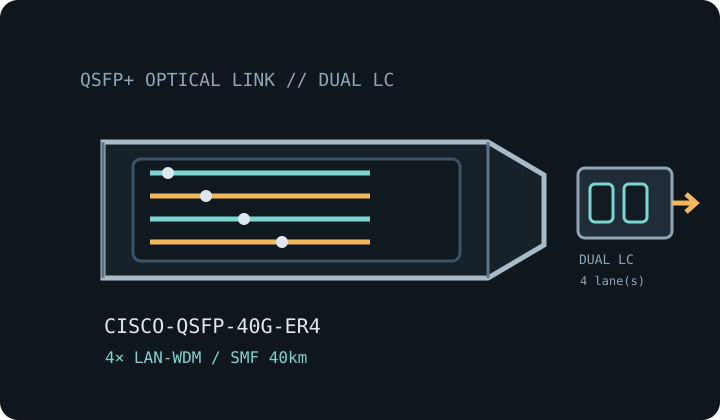

[ MODEL-SPECIFIC OPTICAL NETWORK HARDWARE ]
Cisco QSFP-40G-ER4 40GBASE-ER4 QSFP+ Transceiver
Four-wavelength 40GbE long-reach QSFP+ optic for single-mode fiber up to 40km. Confirm exact module label and host qualification before installation.

IDENTIFICATION: Match the manufacturer name, exact PID/suffix and revision to the host compatibility listing. Stated line rate and maximum reach are specifications, not measured payload performance.
Model-specific specifications
| Dedicated subcategory | SFP transceivers: optical and copper |
|---|---|
| Exact model / ordering SKU | Cisco QSFP-40G-ER4 |
| Form factor and optical type | QSFP+ hot-pluggable four-lane optical module; 40GBASE-ER4. |
| Ethernet rate and interface | 40GBASE-ER4 / 40GbE; 4 × 10Gb/s optical lanes multiplexed into a 40Gb/s Ethernet link. |
| Wavelength | Four LAN-WDM wavelengths centered near 1271, 1291, 1311 and 1331nm. |
| Fiber medium and reach | G.652 single-mode fiber (SMF), up to 40km within the qualified optical budget. |
| Connector | Duplex LC. |
| DOM / DDM | Digital optical monitoring supported; verify host access and alarm handling in platform documentation. |
| Operating temperature | Commercial operating case temperature: 0°C to 70°C. |
| Host switch/router compatibility | Check Cisco TMG for the exact QSFP-40G-ER4 PID, software and port support. Confirm the ER4 link budget at both endpoints; this duplex-LC WDM optic is not the parallel-fiber SR4/LR4 interface, and an attenuator may be required on short spans. |
| Variant and deployment caveat | ER4 reach and optical limits differ from LR4 and from vendor-specific ER modules. Match ER4 optics and validate the actual fiber channel. |
| Measured performance | No measured specimen throughput is claimed; link payload depends on both host ports, FEC, coding, protocol overhead, fiber plant and test method. |
Host qualification and installation
Check Cisco TMG for the exact QSFP-40G-ER4 PID, software and port support. Confirm the ER4 link budget at both endpoints; this duplex-LC WDM optic is not the parallel-fiber SR4/LR4 interface, and an attenuator may be required on short spans.
ER4 reach and optical limits differ from LR4 and from vendor-specific ER modules. Match ER4 optics and validate the actual fiber channel.
Clean and inspect fiber end faces, retain dust caps during storage, follow ESD precautions, and never look into an active optical port. Record the host model, port, software release, transceiver label and available DOM values when documenting a deployed link.
Manufacturer and standards sources
- Cisco 40GBASE QSFP Modules Data SheetCisco’s 40G QSFP datasheet documents the ER4 family; Cisco TMG qualifies exact host platform, PID and software.
- Cisco Transceiver Module Group (TMG) compatibility matrixManufacturer lookup for transceiver PID, supported host platforms and software releases; confirm this exact labeled variant.
- IEEE 802.3 Ethernet standards familyEthernet PHY terminology and link-rate context; MSA-specific optics remain subject to their named module-family specifications.
Source links identify manufacturer documentation and qualification resources. Check the current documentation revision and exact hardware PID before deployment.